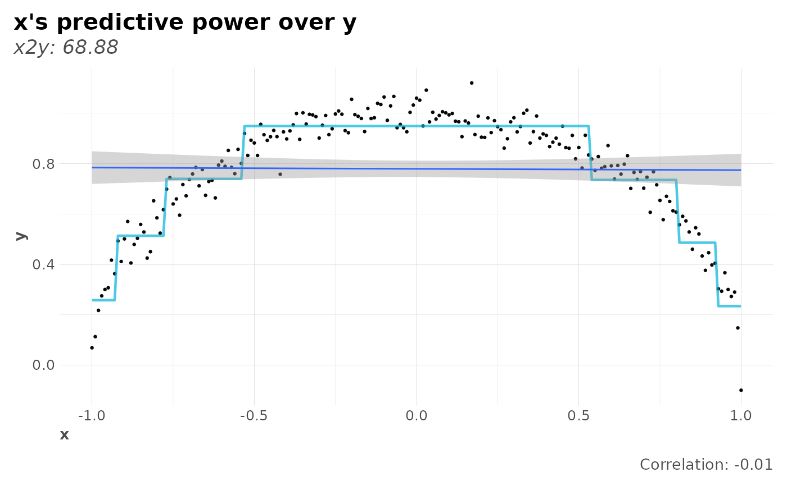
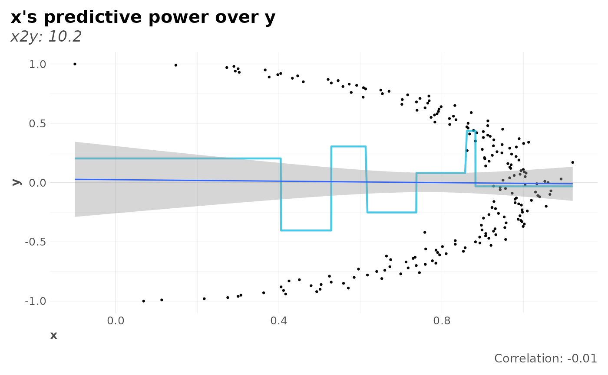

The relative reduction in error when we go from a baseline model
(average for continuous and most frequent for categorical features) to
a predictive model, can measure the strength of the relationship between
two features. In other words, x2y measures the ability of x
to predict y. We use CART (Classification And Regression Trees) models
to be able to 1) compare numerical and non-numerical features, 2) detect
non-linear relationships, and 3) because they are easy/quick to train.
x2y( df, target = NULL, symmetric = FALSE, target_x = FALSE, target_y = FALSE, plot = FALSE, top = 20, quiet = "auto", ohse = FALSE, corr = FALSE, ... ) x2y_metric(x, y, confidence = FALSE, bootstraps = 20, max_cat = 20) # S3 method for x2y_preds plot(x, corr = FALSE, ...) # S3 method for x2y plot(x, type = 1, ...) x2y_preds(x, y, max_cat = 10)
Arguments
| df | data.frame. Note that variables with no variance will be ignored. |
|---|---|
| target | Character vector. If you are only interested in the |
| symmetric | Boolean. |
| target_x, target_y | Boolean. Force target features to be part of
|
| plot | Boolean. Return a plot? If not, only a data.frame with calculated results will be returned. |
| top | Integer. Show/plot only top N predictive cross-features. Set
to |
| quiet | Boolean. Keep quiet? If not, show progress bar. |
| ohse | Boolean. Use |
| corr | Boolean. Add correlation and pvalue data to compare with? For
more custom studies, use |
| ... | Additional parameters passed to |
| x, y | Vectors. Categorical or numerical vectors of same length. |
| confidence | Boolean. Calculate 95% confidence intervals estimated
with N |
| bootstraps | Integer. If |
| max_cat | Integer. Maximum number of unique |
| type | Integer. Plot type: |
Details
This x2y metric is based on Rama Ramakrishnan's
post: An Alternative to the Correlation
Coefficient That Works For Numeric and Categorical Variables. This analysis
complements our lares::corr_cross() output.
Examples
data(dft) # Titanic dataset x2y_results <- x2y(dft, quiet = TRUE, max_cat = 10, top = NULL) head(x2y_results, 10)#> # A tibble: 10 x 4 #> x y obs_p x2y #> <chr> <chr> <dbl> <dbl> #> 1 Fare Pclass 100 65.2 #> 2 Fare Embarked 100 45.3 #> 3 Sex Survived 100 44.4 #> 4 Fare Parch 100 40.0 #> 5 Survived Sex 100 39.5 #> 6 Fare SibSp 100 35.4 #> 7 Pclass Fare 100 32.1 #> 8 Ticket SibSp 100 25.3 #> 9 SibSp Parch 100 21.6 #> 10 Fare Survived 100 20.5# Confidence intervals with 10 bootstrap iterations x2y(dft, target = c("Survived","Age"), confidence = TRUE, bootstraps = 10, top = 8)#> # A tibble: 8 x 6 #> x y obs_p x2y lower_ci upper_ci #> <chr> <chr> <dbl> <dbl> <dbl> <dbl> #> 1 Sex Survived 100 44.4 38.1 52 #> 2 Survived Sex 100 39.5 32.4 49.2 #> 3 Fare Survived 100 20.5 1.23 22.8 #> 4 Age Parch 80.1 18.9 11.6 17.9 #> 5 Pclass Survived 100 16.4 13.2 22.5 #> 6 Age Pclass 80.1 14.8 10.8 18.1 #> 7 Age SibSp 80.1 10.6 6.74 13.4 #> 8 Cabin Survived 100 8.19 6.1 11.4# Compare with mean absolute correlations x2y(dft, "Fare", corr = TRUE, top = 6, target_x = TRUE)#> Warning: the standard deviation is zero#> # A tibble: 6 x 6 #> x y obs_p x2y mean_abs_corr mean_pvalue #> <chr> <chr> <dbl> <dbl> <dbl> <dbl> #> 1 Fare Pclass 100 65.2 0.355 1.95e- 4 #> 2 Fare Embarked 100 45.3 0.144 5.80e- 2 #> 3 Fare Parch 100 40.0 0.216 6.92e-11 #> 4 Fare SibSp 100 35.4 0.160 1.67e- 6 #> 5 Fare Survived 100 20.5 0.257 6.12e-15 #> 6 Fare Sex 100 13.7 0.182 4.23e- 8# Plot (symmetric) results symm <- x2y(dft, target = "Survived", symmetric = TRUE) plot(symm, type = 1)# Symmetry: x2y vs y2x set.seed(42) x <- seq(-1, 1, 0.01) y <- sqrt(1 - x^2) + rnorm(length(x), mean = 0, sd = 0.05) # Knowing x reduces the uncertainty about the value of y a lot more than # knowing y reduces the uncertainty about the value of x. Note correlation. plot(x2y_preds(x, y), corr = TRUE)